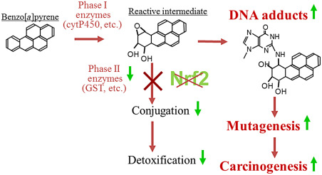

Clara Lim-Sylianco, Ph.D.
Year Conferred: 1995
Field of Specialization: Biochemistry and Organic Chemistry
Status: Deceased
Dr. Sylianco was a Filipino scientist who taught on different courses mainly on organic chemistry, biochemistry, genetic toxicology, and molecular nutrition. Furthermore, her research mainly focused on antimutagens, mutagens, and bio-organic mechanisms in which she has made 7 books, 5 monographs, and 50 scientific articles to her name. Most of her textbooks about chemistry are used in many schools throughout the country.
Educational Background:
- College Degree for Pre-Med & Chemistry, Silliman University (1949)
- Masters Degree for Chemistry, University of the Philippines (1953)
- Doctorate for Biochemistry and Organic Chemistry, University of Iowa (1957)
MCSE boot camps have its supporters and its detractors. Some people do not understand why you should have to spend money on boot camp when you can get the MCSE study materials yourself at a fraction of the camp price. However, who has the willpower to actually sit through a self-imposed MCSE training. who has the willpower to actually sit through a self-imposed MCSE training.
Academic Researches
Principle of Organic Chemistry, 5th ed., 1975
Modern Biochemistry, 1976
Monograph Series on Molecular Biochemistry: Nucleic Acids, Protein, Carbohydrates, Lipids, 1974
Laboratory Manual in Organic Chemistry, 1965
Laboratory Manual in Biochemistry, 1961
Awards & Recognition
In 1958, she became a Fellow of the Royal Society.
In 1977, she received the Gregario Y. Zara Award.
From 1974 to 1977, she was the University of the Philippines Endowment Professional Chair in Chemistry.
Recognized as a National Scientist of the Philippines in 1994.

Carcinogenic Agents in Altered DNA
Conducted extensive research on mutagens – often-carcinogenic agents that permanently alter genetic materials such as DNA